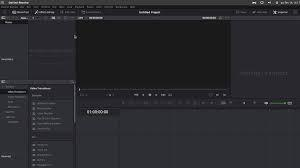

Mani sasniegumi un uzzinātais datorikas stundās
1. Videoklipu taisīšana
Datorikas stundās esmu apguvis prasmi uzņemt videomateriālus un montēt tos izmantojot datoraplikācijas kā Kdenlive, Clipchamp un DaVinci Resolve. Tam veltīju daudz laika, jo iepriekš ar tādām aplikācijām neesmu sastapies, kā arī aplikācijās ir tik daudz iespēju, ka ir grūti atrast tieši to rīku vai funkciju, kas man ir vajadzīga. Pēc ilga laika mācitoes izmatot videorediģešanas programmas un montējot, kā rezultātu dabūju tādu video: 
2. Word
Es esmu apguvis dažādas noderīgas prasmes un tehnikas, lai efektīvi izmantotu Microsoft Word. Stundas sākās ar pamatiem, piemēram, kā izveidot, atvērt un saglabāt dokumentus. Es arī iemācījos, kā formatēt tekstu, tostarp mainīt fonta izmēru, stilu un krāsu, lai dokumenti būtu vizuāli pievilcīgāki. Svarīga mācību daļa bija izpratne par to, kā strādāt ar paragrāfiem. Tagad es zinu, kā mainīt līniju atstarpes, norakstīt tekstu (pa kreisi, pa labi, centrēti un pamatojot) un izmantot atkāpes funkciju, lai sakārtotu saturu. Esmu arī kļuvuši pārliecināts par buljona un numurēto sarakstu izmantošanu, lai dokumenti būtu skaidrāki. Vēl viena svarīga prasme, ko esmu attīstījis, ir spēja ievietot un formatēt attēlus, tabulas un formas dokumentā. Es iemācījos tās mainīt izmēros un novietot, kā arī nodrošināt pareizu visu elementu izlīdzināšanu. Turklāt tagad es zinu, kā ievietot galvenes un kājenes, kā arī lappuses numurus, kas dokumentiem piešķir profesionālu izskatu. Es arī esmu izpētījis vairākas advancētās funkcijas, piemēram, stilu un veidņu izmantošanu, lai nodrošinātu konsekventu formatējumu visā dokumentā. Stundās es iemācījos izmantot pārskatīšanas rīkus, lai izsekotu izmaiņām un pievienotu komentārus, kas būs īpaši noderīgi sadarbībai. Kopumā es jūtos pārliecinātāks, izmantojot Microsoft Word dažādiem uzdevumiem, sākot no eseju rakstīšanas līdz profesionālu ziņojumu izveidei. Prasmes, ko esmu iemācījies datorzinātņu stundās, ir padarījušas mani efektīvāku un produktīvāku, strādājot ar dokumentiem.